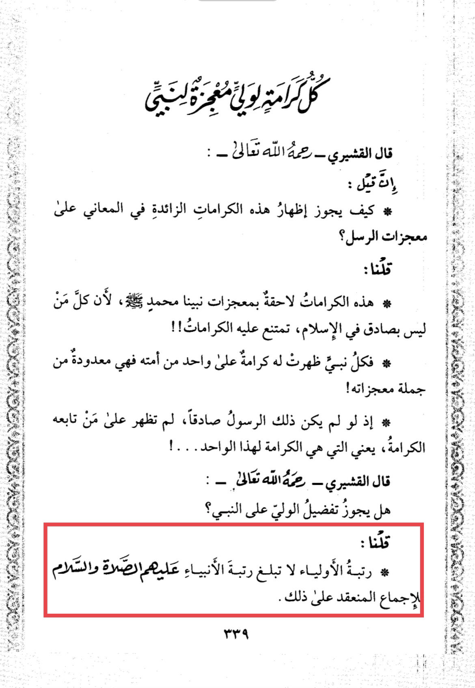
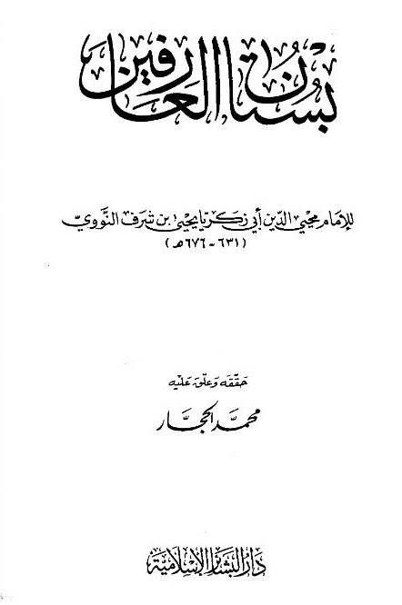
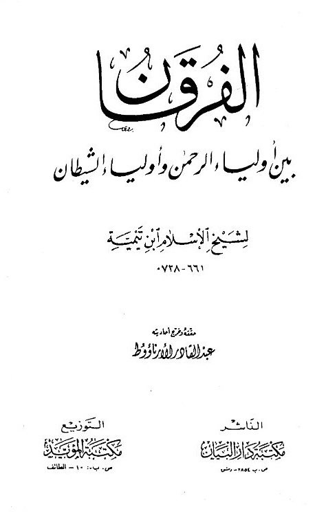
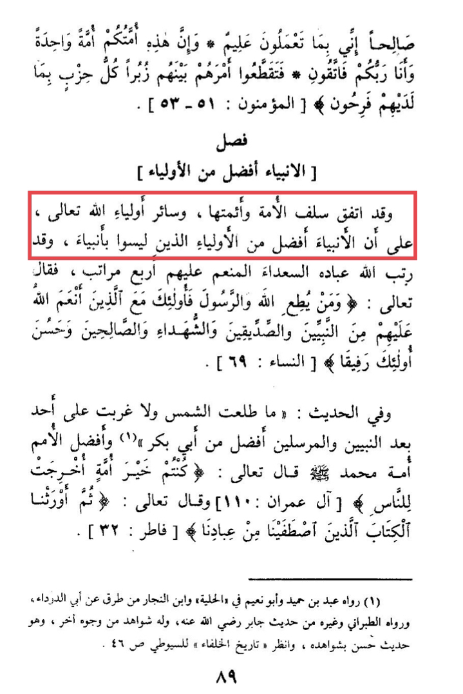

One objection that rafidahs bring up is that imams are better then the prophets. But in here I will just show
the ijma of the scholars of Ahlul sunnah then objections for Shias


Imam al-Nawawi (RA) stated:
The Status of the Awliya cannot reach the Rank of the Ambiya. Ijma has been decided on this matter.


Imam ibn Taymiyyah (RA) stated:
The Salaf of this Ummah and the Imams and all the Awliya are
in agreement that Prophets are superior to Awliya.